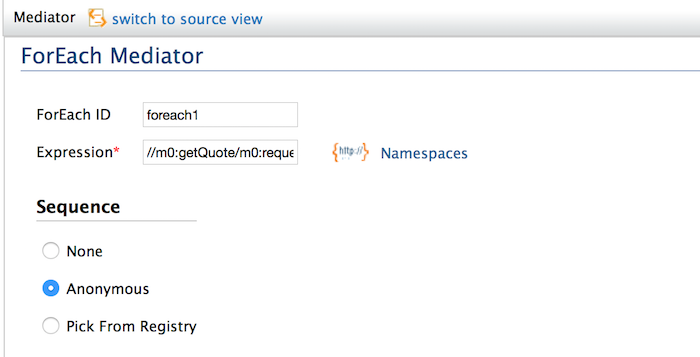

The ForEach mediator provides a general loop construct as a mediator. It allows a message to be processed iteratively while maintaining the original message context. The ForEach mediator split the message into a number of different messages derived from the parent message, by finding matching elements for the XPath or JSONPath expression that is specified. New messages will be created for all each of the matching elements and processed in sequence within the main flow using either specified sequence or endpoint. The original message will be modified by replacing the split elements with the elements that go through the loop construct.
Figure1: ForEach Mediator
ForEach Mediator can be configured with the following options.